Computer Modeling (OCN 682)
Intro to Plotting
UH Fall 2026
2026-09-01
Outline of class
Quiz 2!
Go over some readme files
Responsible plotting
Intro to ggplot2
Make your first plot
Review
What are the 5 sections you should always have in your scripts?
Why you should always look at your data
We have to really understand our data to be able to decide on the appropriate analyses to answer our research questions. It can also lead to unexpected & interesting research questions. That requires first looking at your data, usually in a number of ways, to ask questions like:
- Are there interesting patterns, groups, trends or relationships?
- How are observations distributed?
- Are there outliers?
- Is there notable bias in observations or missing observations?
When do I need to look at my data and think about it really hard before analyzing it?
EVERY TIME
When can I just make assumptions about the data and some some regression or hypothesis testing or anything else without exploring it?
NEVER
Start exploring with visualizations that don’t hide or assume anything about the data

For continuous (measured) observations you might start with:
- Jitter plots (if logical groups exist)
- Beeswarm plots (ggbeeswarm)
- Scatterplots (2 variables, or map additional)
- Histograms or density plots
- More variables: map w/ colors, size?
Jitter plots:
Show values of observations within a group, adding some amount of “jitter” so that they don’t all overlap
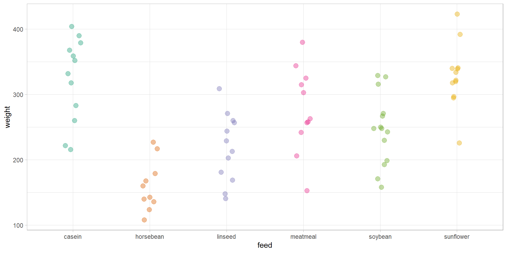
Swarm plots:
Show values of observations within a group, with amount of jitter dependent on density around values
Density plots:
Show values of observations within a group
Scatter plots:
Show relationship between two measured variables
Website with other ways to visualize the same data

Why can’t we just look at summary statistics?

Why can’t we just look at summary statistics?

Summary statistics hide important information!!
Originally created by Alberto Cairo in Download the Datasaurus: Never trust summary statistics alone; always visualize your data
Don’t hide your data
Weissgerber TL, Milic NM, Winham SJ, Garovic VD (2015) Beyond Bar and Line Graphs: Time for a New Data Presentation Paradigm. PLoS Biol 13(4): e1002128. https://doi.org/10.1371/journal.pbio.1002128
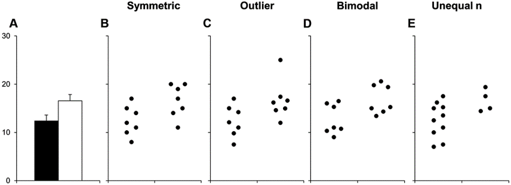
bar plot
Would you draw the same conclusions with each of these datasets?
The hierarchy of data viz
Is it correct?
Is it clear?
Does it communicate data responsibly?
Does it look awesome?
1. Is it correct?
- Observations and experimental design
- Avoid data wrangling and calculation mistakes
- Keep raw data raw
- Check…check.. quadruple check data wrangling/cleaning
- Look at your data frames at every step
- Compare your outcomes to expected results
- Reproducibility and detailed annotation
- Get an outside reviewer to check your code
- Units/labels
2. Is it clear?
- Too many points, variables, or series
- Overwhelming legends
- Lack of useful emphasis
- Are things put in context?
- Is it a pie graph? (Don’t do it)
- Overmapping aesthetics
- Is it 3D? (please no)
Too many points, variables or series
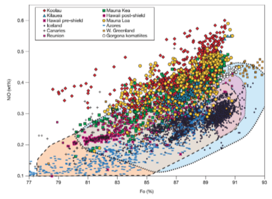
Too many points
Too many everything
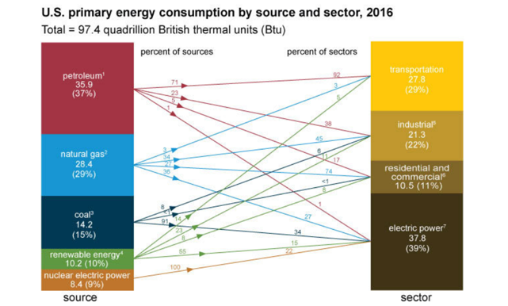
too many everything
Emphasize the things you want the audience or readers to remember
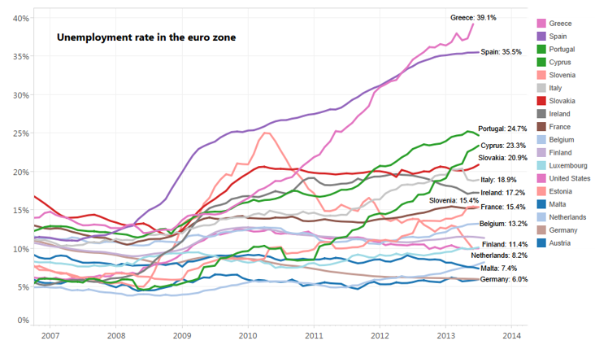
Emphasize the things you want the audience or readers to remember
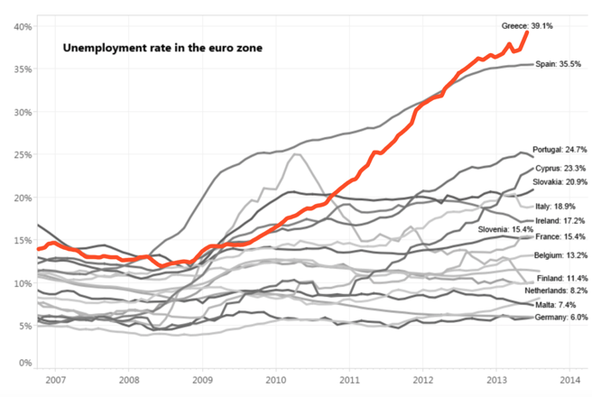
Legends:
Put them somewhere that reduces eyes jumping back and forth across the whole page
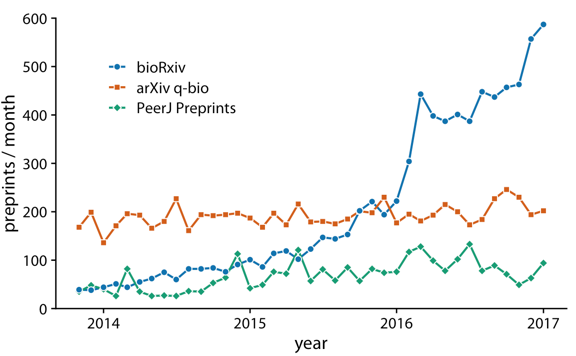
Often for clarity, labels are often easier than legends
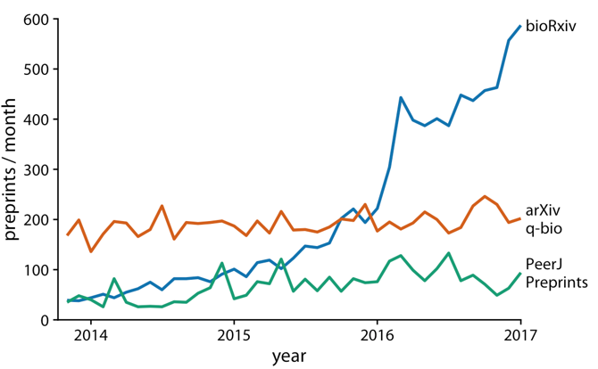
Often for clarity, labels are often easier than legends
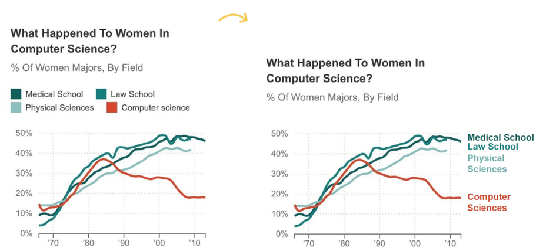
Your legends should definitely follow a logical order
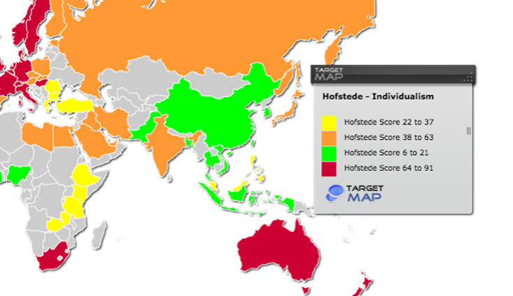
Consider putting things in context if visualizing across plots, for easier comparison
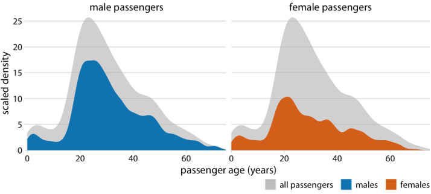
context
3. Is it responsible?
Is your graph type/model/presentation even appropriate?
Misleading axes ranges or direction
Masking data within summary statistics
Does it include a measure of uncertainty (if applicable)?
Misleading axes ranges or direction
- Reversing scale direction
- Manipulating scale increments or data to make differences seem larger/less than they are
- Cropping value scale to exaggerate differences
Reversing scale direction

Manipulating scales
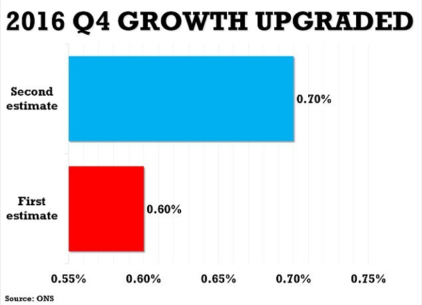
Manipulating scales

Show me the data
Adding summary statistics, models, etc. is good - but try to also show me the actual data
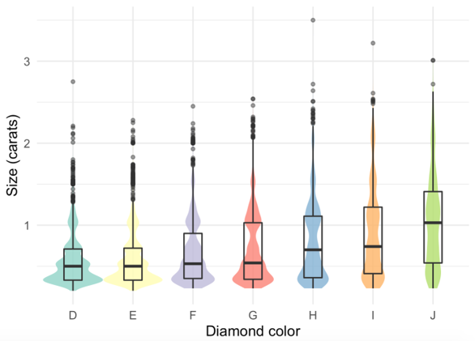
Show me the data
Adding summary statistics, models, etc. is good - but try to also show me the actual data
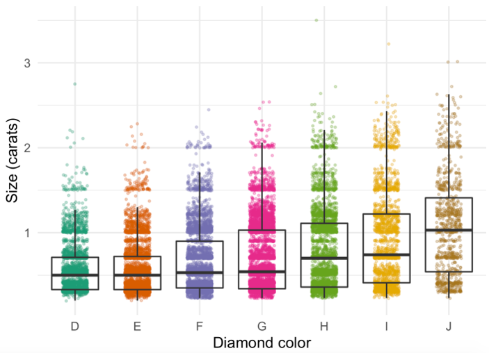
Show me the data
Another option to show data + summary: Marginal Plots
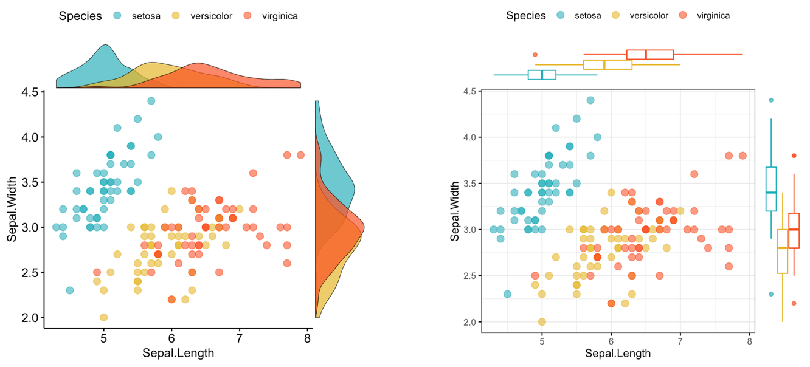
Does it look awesome?
Never sacrifice clarity for creativity
Decluttering your graphs
Empty & inked space balance
Thoughtful color schemes (always clarity > beauty)
Declutter your graphs
Every element should exist to improve audience understanding
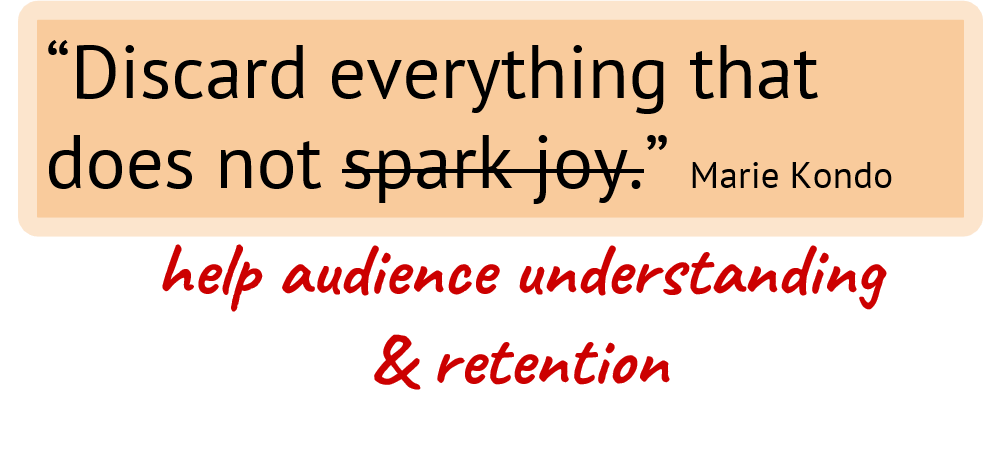

For each element and design decision, ask:
- Is this element necessary/helpful for audience understanding?
- Is it presented in the best way to encourage audience understanding & retention of the things that I have decided are the most critical?
This includes:
- Gridlines
- Symbols/images
- Tick marks & increments
- Axis labels & tick mark labels
- Angled text
- Points, columns, lines, etc.
- Legends (avoid redundancy)
- Value labels & annotation
- Colors & formatting
This is not awesome
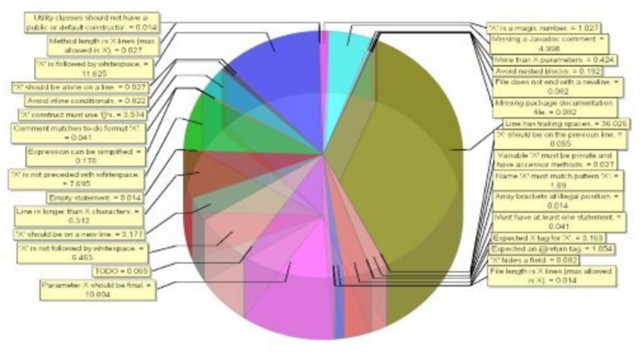
piechart
And ggplot2 defaults have their own issues
Things you must change here:
- Update axis labels
- Reduce width of each groups
Things you should consider changing:
- BG color
- X & Y limits & expansion
- Often overused/unnecessary gridlines
- Not prompted to auto-update axis labels
- Abbreviations are hard
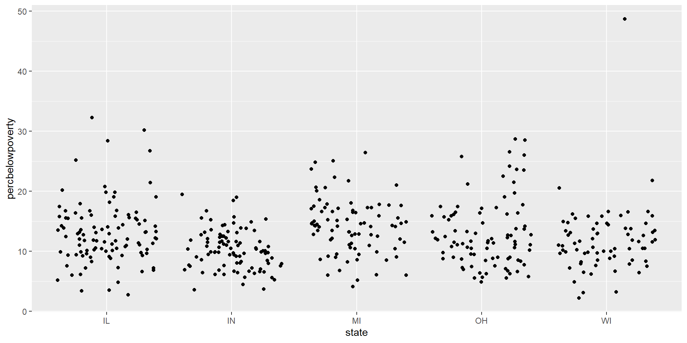
Make it better
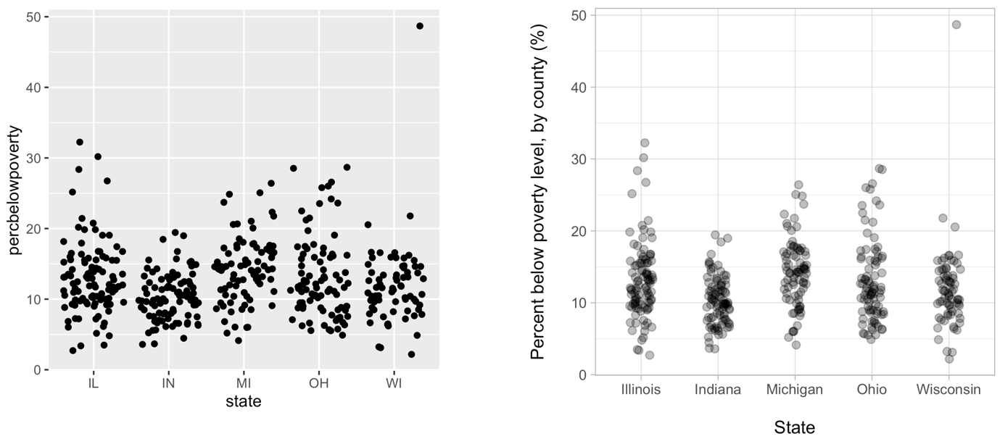
Things that are almost always bad, or a symptom of badness:
- Color gradients with a single element
- Shadows. Why are there shadows?
- 3D. With rare exceptions.
Things that can be bad, or a symptom of badness:
- Multiple legends (probably means you’ve plotted too much)
- Overuse of colors
- Many symbols of line types
- Labels for values (esp. if many) - consider a table of exact value is important
- Really creative fonts
What needs changing?
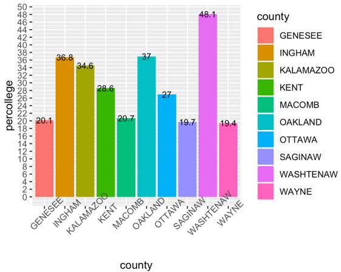
michigan1
A possible update
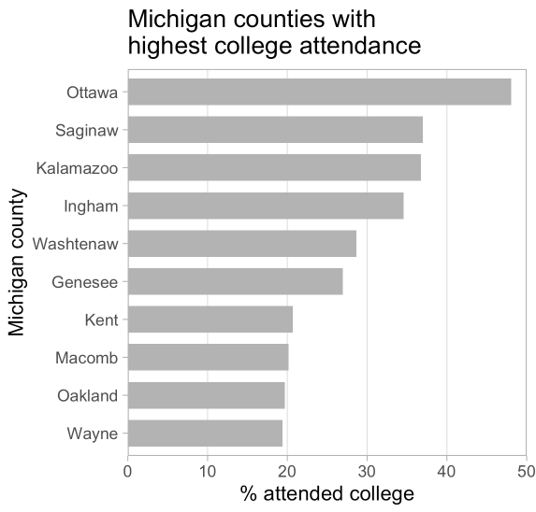
michigan2
Let’s ggplot!

Grammar of graphics (ggplot2)
ggplot2 is a data visualization package
Structure of the plot can be summarized like this:
aes() means aesthetics
geom_xx means geometry
Data: Palmer Penguins
Measurements for penguin species, island in Palmer Archipelago, size (flipper length, body mass, bill dimensions), and sex.
- Set-up your script and don’t forget to comment.

Rows: 344
Columns: 8
$ species <fct> Adelie, Adelie, Adelie, Adelie, Adelie, Adelie, Adel…
$ island <fct> Torgersen, Torgersen, Torgersen, Torgersen, Torgerse…
$ bill_length_mm <dbl> 39.1, 39.5, 40.3, NA, 36.7, 39.3, 38.9, 39.2, 34.1, …
$ bill_depth_mm <dbl> 18.7, 17.4, 18.0, NA, 19.3, 20.6, 17.8, 19.6, 18.1, …
$ flipper_length_mm <int> 181, 186, 195, NA, 193, 190, 181, 195, 193, 190, 186…
$ body_mass_g <int> 3750, 3800, 3250, NA, 3450, 3650, 3625, 4675, 3475, …
$ sex <fct> male, female, female, NA, female, male, female, male…
$ year <int> 2007, 2007, 2007, 2007, 2007, 2007, 2007, 2007, 2007…We will make this plot

Start with the penguin dataframe
Start with the penguin dataframe, map bill depth to the x-axis
Start with the penguin dataframe, map bill depth to the x-axis and map bill length to the y-axis.
Start with the penguin dataframe, map bill depth to the x-axis and map bill length to the y-axis. Represent each observation with a point.
Start with the penguin dataframe, map bill depth to the x-axis and map bill length to the y-axis. Represent each observation with a point and map species to the colour of each point.
Start with the penguin dataframe, map bill depth to the x-axis and map bill length to the y-axis. Represent each observation with a point and map species to the colour of each point. Title the plot “Bill depth and length”
Start with the penguin dataframe, map bill depth to the x-axis and map bill length to the y-axis. Represent each observation with a point and map species to the colour of each point. Title the plot “Bill depth and length”. Add the subtitle “Dimensions for Adelie, Chinstrap, and Gentoo Penguins”
Start with the penguin dataframe, map bill depth to the x-axis and map bill length to the y-axis. Represent each observation with a point and map species to the colour of each point. Title the plot “Bill depth and length”. Add the subtitle “Dimensions for Adelie, Chinstrap, and Gentoo Penguins”, label the x and y axes as “Bill depth (mm)” and “Bill length (mm)”, respectively.
Start with the penguin dataframe, map bill depth to the x-axis and map bill length to the y-axis. Represent each observation with a point and map species to the colour of each point. Title the plot “Bill depth and length”. Add the subtitle “Dimensions for Adelie, Chinstrap, and Gentoo Penguins”, label the x and y axes as “Bill depth (mm)” and “Bill length (mm)”, respectively. Label the legend “Species.
Start with the penguin dataframe, map bill depth to the x-axis and map bill length to the y-axis. Represent each observation with a point and map species to the colour of each point. Title the plot “Bill depth and length”. Add the subtitle “Dimensions for Adelie, Chinstrap, and Gentoo Penguins”, label the x and y axes as “Bill depth (mm)” and “Bill length (mm)”, respectively. Label the legend “Species. Add a caption for the source of the data.
ggplot(data=penguins,
mapping = aes(x = bill_depth_mm,
y = bill_length_mm,
color = species)) +
geom_point()+
labs(title = "Bill depth and length",
subtitle = "Dimensions for Adelie, Chinstrap, and Gentoo Penguins",
x = "Bill depth (mm)", y = "Bill length (mm)",
color = "Species",
caption = "Source: Palmer Station LTER / palmerpenguins package")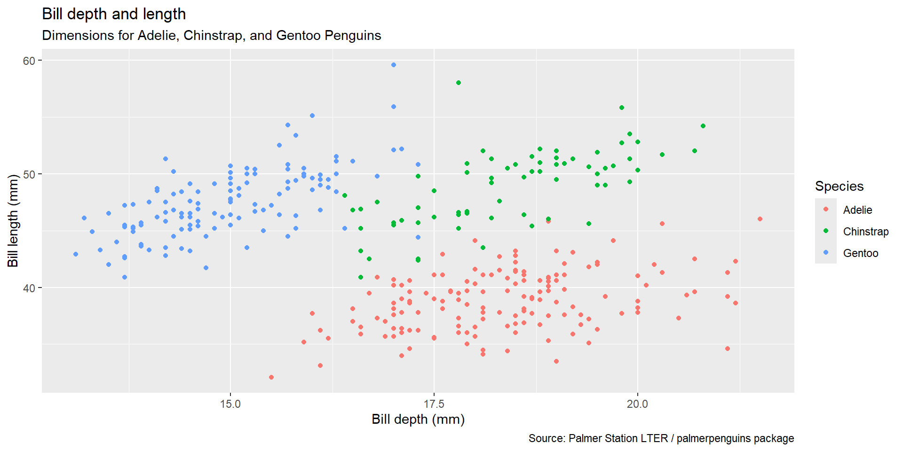
Start with the penguin dataframe, map bill depth to the x-axis and map bill length to the y-axis. Represent each observation with a point and map species to the colour of each point. Title the plot “Bill depth and length”. Add the subtitle “Dimensions for Adelie, Chinstrap, and Gentoo Penguins”, label the x and y axes as “Bill depth (mm)” and “Bill length (mm)”, respectively. Label the legend “Species. Add a caption for the source of the data. Finally, use a discrete color scale that is designed to be preceived by viewers with common forms of color blindness.
ggplot(data=penguins,
mapping = aes(x = bill_depth_mm,
y = bill_length_mm,
color = species)) +
geom_point()+
labs(title = "Bill depth and length",
subtitle = "Dimensions for Adelie, Chinstrap, and Gentoo Penguins",
x = "Bill depth (mm)", y = "Bill length (mm)",
color = "Species",
caption = "Source: Palmer Station LTER / palmerpenguins package")+
scale_color_viridis_d()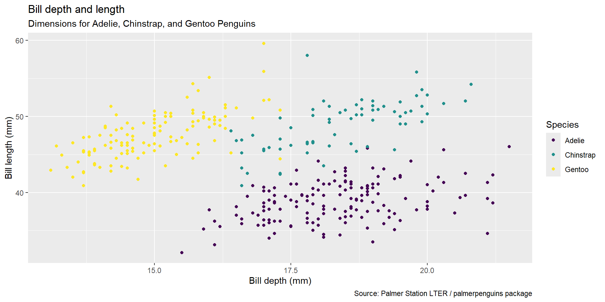
Aesthetic options
Commonly used characteristics of plotting characters that can be mapped to a specific variable in the data are:
- color (or colour)
- shape
- size
- alpha (transparency)
Color
ggplot(data=penguins,
mapping = aes(x = bill_depth_mm,
y = bill_length_mm,
color = species)) +
geom_point()+
labs(title = "Bill depth and length",
subtitle = "Dimensions for Adelie, Chinstrap, and Gentoo Penguins",
x = "Bill depth (mm)", y = "Bill length (mm)",
color = "Species") +
scale_color_viridis_d()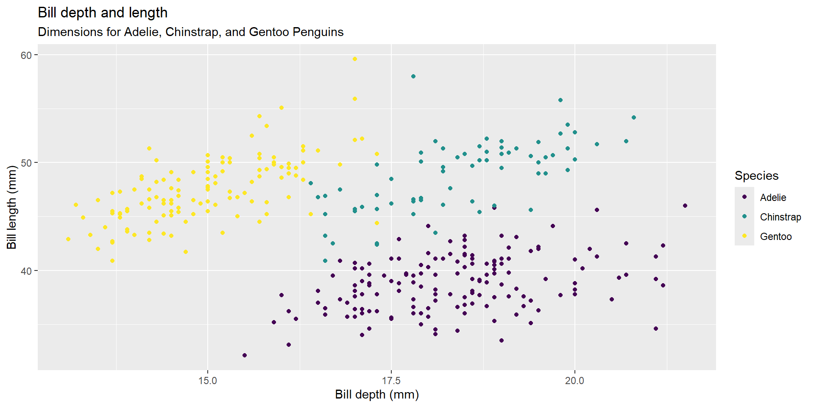
Shape
Mapped to a different variable than color.
ggplot(data=penguins,
mapping = aes(x = bill_depth_mm,
y = bill_length_mm,
color = species,
shape = island
)) +
geom_point()+
labs(title = "Bill depth and length",
subtitle = "Dimensions for Adelie, Chinstrap, and Gentoo Penguins",
x = "Bill depth (mm)", y = "Bill length (mm)",
color = "Species") +
scale_color_viridis_d()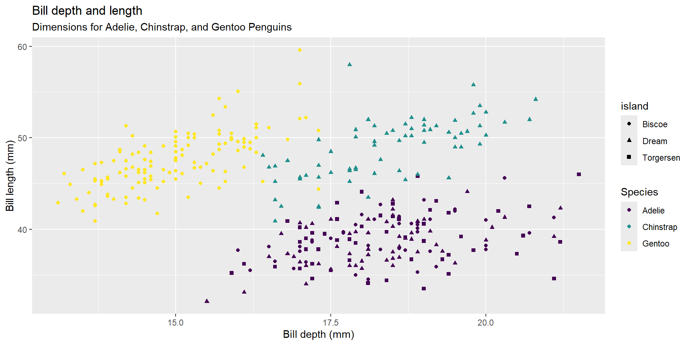
Shape
Mapped to the same variable than color.
Size
Alpha (transparency)
Mapping vs setting
- Mapping: Determine the size, shape, alpha, etc. of points based on the values of a variable in the data
- goes into aes()
- Setting: Determine the size, shape, alpha, etc. of points not based on the values of a variable in the data
- goes into geom_*(). This was geom_point() in the previous example, but we will learn more geoms soon.
Faceting
Faceting
- Smaller plots that display different subsets of the data
- Useful for exploring conditional relationships and large data
Note:
In the next few slides I do not put proper titles, axis labels, etc. because I am focusing on faceting. However, remember to always label your plots!
Facet grid (Make it a grid)
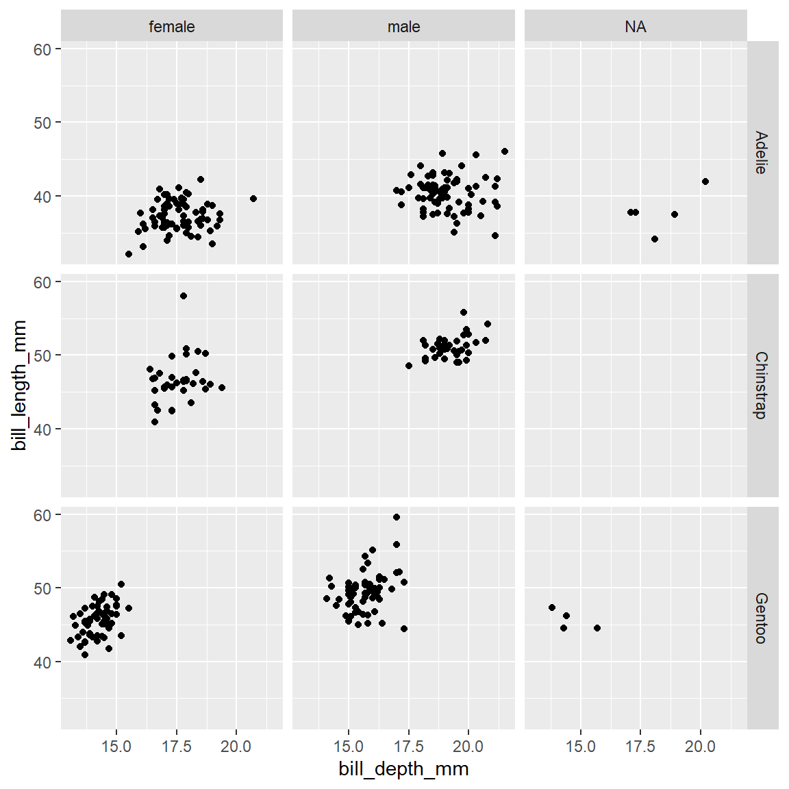
Notice there is a section labeled NA for sex. This is because there were some birds where they did not know the sex. We will learn how to clean this up next week.
Facet wrap (allows you to manipulate rows and columns)
- wrap by species
Facet wrap (allows you to manipulate rows and columns)
- Make it two columns
Faceting summary
- facet_grid():
- 2D grid
- rows ~ columns
- facet_wrap(): 1d ribbon wrapped according to numbers of rows and columns specified or available plotting area
Facet and color
Facet and color, no legend
ggplot2 resources
Data to viz
ggplot2 cheatsheet
All the geoms
A master list of visuals
Practical ggplot
R graph gallery
More plotting fun in online class.
Thanks!
Slides created via Quarto
Some slides modified from Allison Horst, Data Science Box
OCN 682 | Week 3 | Intro to Plotting